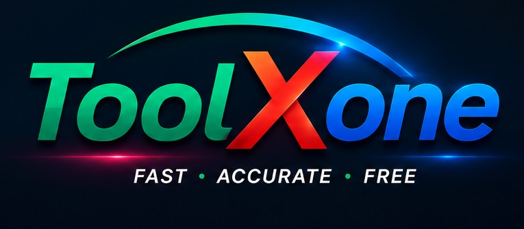

Free Online Calculators & Conversion Tools
Fast • Accurate • Free
The ToolXone Currency Converter is a free online tool for converting amounts between different currencies using the latest available exchange rates. Enter an amount, select the source and target currencies, and convert the value instantly. The converter also allows you to swap currencies and view the current exchange-rate relationship between the selected currencies.
A currency converter is an online tool that calculates the value of an amount from one currency in another currency. Currency conversion is commonly used when traveling, shopping internationally, comparing prices, receiving payments, sending money across borders and working with international financial values. A currency converter makes these calculations faster by applying an exchange rate to the amount entered by the user.
Currency conversion uses an exchange rate that represents the value of one currency relative to another. For example, if the exchange rate is 1 USD = 280 PKR, converting 5 USD to Pakistani Rupees means multiplying 5 by the applicable exchange rate. ToolXone performs this calculation automatically after you select the source and target currencies.
Enter the amount you want to convert, select the currency you are converting from, select the currency you want to convert to, and then select Convert. ToolXone fetches the latest available exchange rate for the selected source currency and uses it to calculate the converted amount. The result displays the original amount, converted amount and applicable exchange rate.
ToolXone Currency Converter supports commonly used international currencies including US Dollar, Euro, British Pound, Chinese Yuan, Japanese Yen, Canadian Dollar, Australian Dollar, New Zealand Dollar, Swiss Franc, Singapore Dollar, Hong Kong Dollar, South Korean Won, Turkish Lira, UAE Dirham, Saudi Riyal, Indian Rupee and Pakistani Rupee.
The Swap Currencies button makes it easy to reverse the selected currencies. For example, if the converter is set to convert USD to PKR, selecting Swap Currencies changes the direction to PKR to USD and immediately performs the conversion again.
An exchange rate tells you how much of one currency is required to equal one unit of another currency. The displayed exchange rate depends on the selected source and target currencies. Because currency markets change continuously, exchange rates can change over time. The rate shown by ToolXone represents the latest available rate returned by its exchange-rate service at the time of conversion.
Currency exchange rates can change because of factors such as supply and demand, interest rates, inflation, economic conditions, international trade, market expectations and global financial events. As market conditions change, the relative value of currencies can also change.
Travelers can use a currency converter to estimate the value of money before or during an international trip. Converting an amount from a home currency into a destination currency can help with budgeting, comparing prices and understanding the approximate local value of travel expenses.
A currency converter can help shoppers estimate the cost of products priced in another currency. For example, someone using Pakistani Rupees can convert an international product price into PKR to better understand its approximate cost before making a purchase.
Businesses that work with international customers, suppliers or services may need to compare values across currencies. A currency converter can provide a quick estimate when reviewing international prices, payments, expenses and other financial amounts.
ToolXone requests the latest available exchange-rate data when a conversion is performed. This allows the calculator to use the rate returned by its online exchange-rate service rather than relying on a manually entered fixed rate. Exchange rates may differ from the final rate offered by banks, card networks, money-transfer services or currency exchange providers because those services may apply their own rates, spreads or fees. The provider’s open endpoint updates its rate data once per day. Retrieving it again does not necessarily mean the underlying rates have changed.
Manual currency conversion requires finding the appropriate exchange rate and multiplying the amount by that rate. ToolXone automates both the exchange-rate lookup and the mathematical calculation, reducing the amount of manual work required and making quick currency comparisons easier.
Always verify that the correct source and target currencies are selected before converting. Check the amount carefully and review the displayed exchange rate and converted value. For important financial transactions, remember that the actual amount received or paid may differ because banks, payment providers and currency exchange services can apply fees, commissions or different exchange rates.
ToolXone makes it easy to convert between US Dollars and Pakistani Rupees. Select USD as the source currency and PKR as the target currency to convert dollars into Pakistani Rupees. To perform the reverse calculation, use the Swap Currencies button or select PKR as the source currency and USD as the target currency.
ToolXone provides a free browser-based Currency Converter for quick exchange-rate calculations. No dedicated software installation is required. The responsive interface can be used on desktop computers, laptops, tablets and smartphones with a modern web browser.
The ToolXone Currency Converter provides a simple way to convert amounts between supported currencies using the latest available exchange rates. With direct conversion, currency swapping, formatted results and exchange-rate information, it is useful for travel, shopping, international business and everyday currency comparisons.